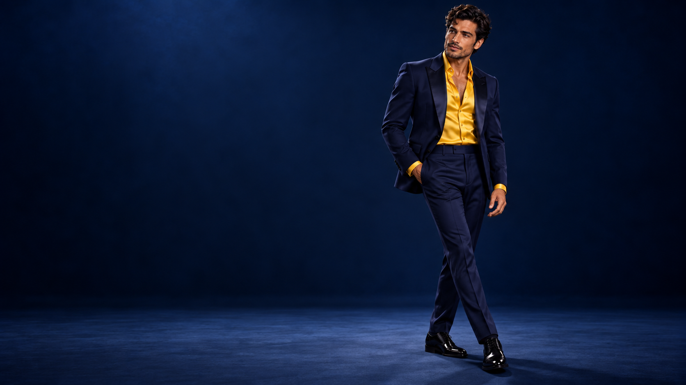
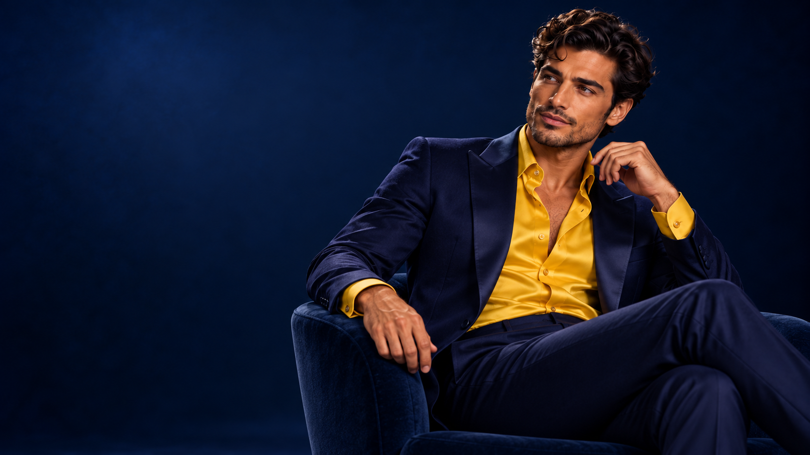
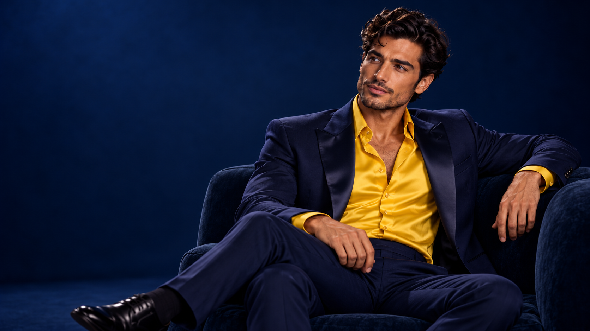
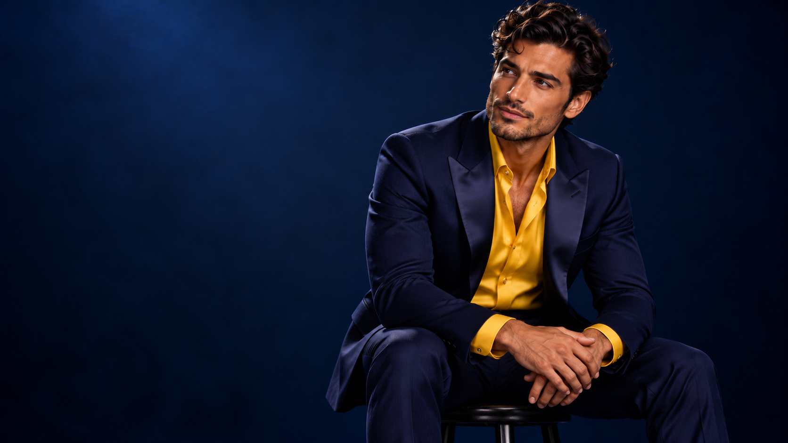
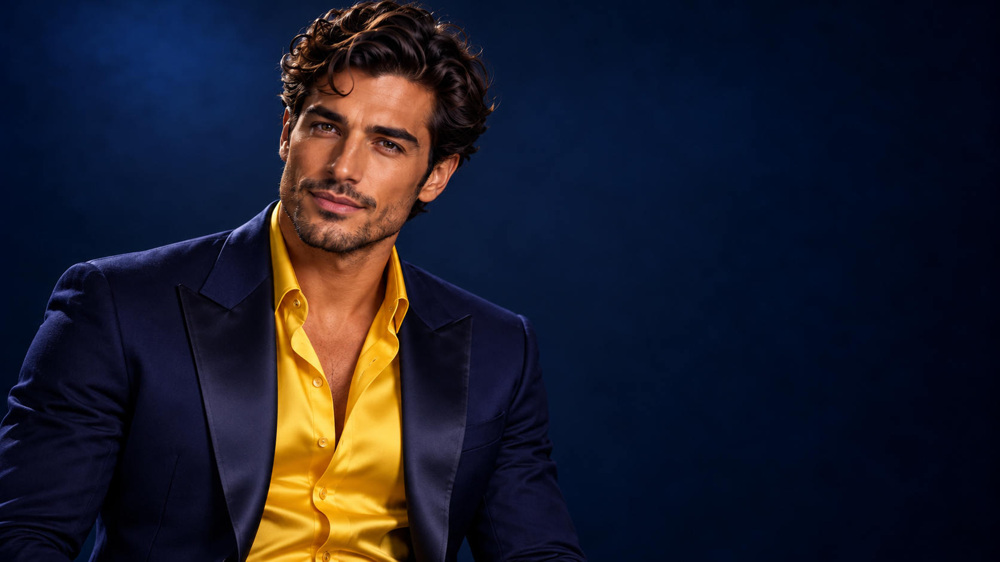
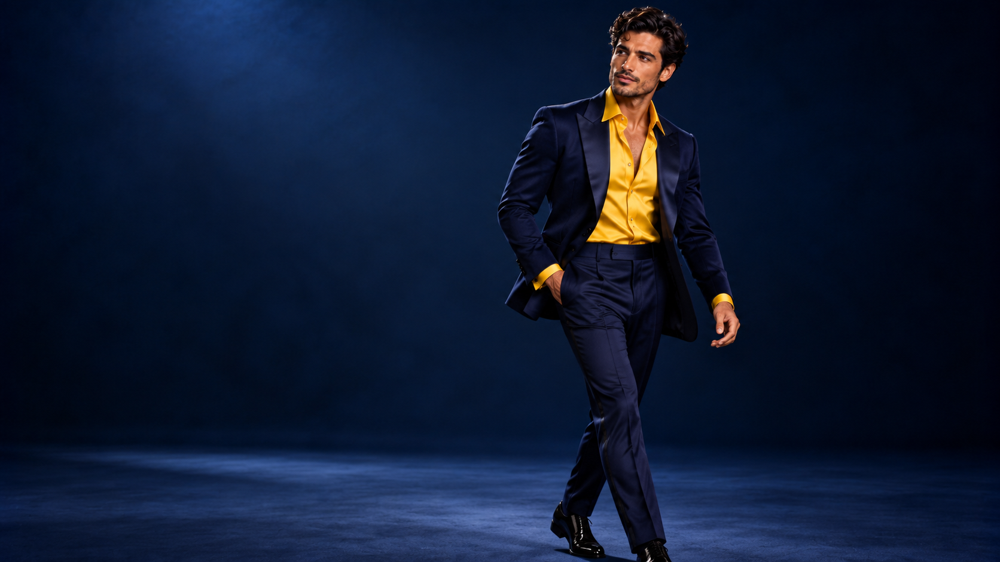

01 / Repertoire
Russian & International
Verdi, Tchaikovsky, Puccini, Bizet, Mozart, Rimsky-Korsakov and selected concert repertoire.

Baritone
Opera · Concert · International stage
Biography
Diego Morales is a lyric-dramatic baritone working across opera, gala and concert repertoire. The template is intentionally text-led: biography, roles, programs and news are presented with the same clarity as a fashion editorial.
Replace this biography with the artist’s verified credits, theatres, conductors and debuts. The layout is designed to stay elegant even when the text becomes substantial.

Verdi, Tchaikovsky, Puccini, Bizet, Mozart, Rimsky-Korsakov and selected concert repertoire.

Two clear booking formats: a curated orchestral gala and a focused solo evening with piano or orchestra.
Selected repertoire
Positioning
Video blog
Replace the placeholders with YouTube, RuTube or Vimeo links. The presentation remains editorial rather than platform-like.


Agenda
Simple lines instead of poster cards.
News
Short editorial notes. No heavy cards, no boxed newspaper layout.
Short news copy sits directly on the page, with generous white space and strong type hierarchy.
New visual language for the artist: dark blue tailoring, yellow silk and a clean fashion-standard presentation.
A flexible orchestral program for theatres, festivals and philharmonic halls.
